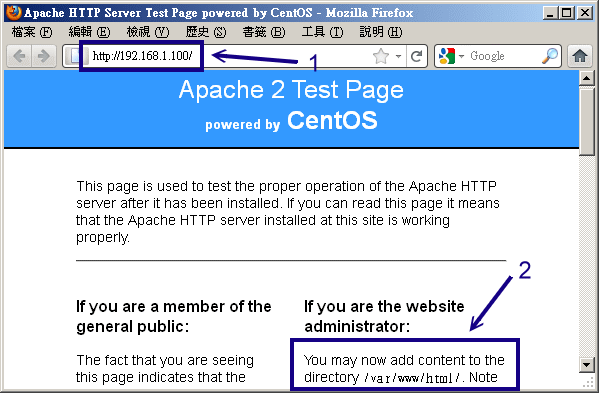

從前面的說明當中，我們知道在 Linux 上面要達成網頁伺服器需要 Apache 這套伺服器軟體吶！不過 Apache
僅能提供最基本的靜態網站資料而已，想要達成動態網站的話，那麼最好還是需要 PHP 與 MySQL 的支援才好。所以底下我們將會以
LAMP 作為安裝與設定的介紹，加油吧！ ^_^
 20.2.1 LAMP 所需軟體與其結構
20.2.1 LAMP 所需軟體與其結構
既然我們已經是 Linux 作業系統，而且使用的是號稱完全相容於 Red Hat Enterprise Linux 的 CentOS 版本，
那當然只要利用 CentOS 本身提供的 Apache, PHP, MySQL 即可！不建議你自行利用
tarball 安裝你的 LAMP 伺服器。因為自行安裝不但手續麻煩，而且也不見得比系統預設的軟體穩定。
除非你有特殊的需求 (例如你的某些 Apache 外掛程式需要較高的版本，或者是 PHP, MysQL 有特殊版本的需求)，
否則請使用 yum 來進行軟體的安裝即可。
那麼我們的 LAMP 需要哪些東西呢？你必需要知道的是，PHP 是掛在 Apache 底下執行的一個模組，
而我們要用網頁的 PHP 程式控制 MySQL 時，你的 PHP 就得要支援 MySQL 的模組才行！所以你至少需要底下幾個軟體：
- httpd (提供 Apache 主程式)
- mysql (MySQL 客戶端程式)
- mysql-server (MySQL 伺服器程式)
- php (PHP 主程式含給 apache 使用的模組)
- php-devel (PHP 的發展工具，這個與 PHP 外掛的加速軟體有關)
- php-mysql (提供給 PHP 程式讀取 MySQL 資料庫的模組)
要注意， Apache 目前有幾種主要版本，包括 2.0.x, 2.2.x 以及 2.3.x 等等，至於 CentOS 6.x 則是提供
Apache 2.2.x 這個版本啦。如果你沒有安裝的話，請直接使用 yum 或者是原本光碟來安裝先：
# 安裝必要的 LAMP 軟體： php-devel 可以先忽略～
[root@www ~]# yum install httpd mysql mysql-server php php-mysql
|
先來瞭解一下 Apache 2.2.x 這個版本的相關結構，這樣才能夠知道如何處理我們的網頁資料啊！
- /etc/httpd/conf/httpd.conf (主要設定檔)
httpd 最主要的設定檔，其實整個 Apache 也不過就是這個設定檔啦！裡面真是包山包海啊！不過很多其他的 distribution
都將這個檔案拆成數個小檔案分別管理不同的參數。但是主要設定檔還是以這個檔名為主的！
你只要找到這個檔名就知道如何設定啦！
- /etc/httpd/conf.d/*.conf (很多的額外參數檔，副檔名是 .conf)
如果你不想要修改原始設定檔 httpd.conf 的話，那麼可以將你自己的額外參數檔獨立出來，
例如你想要有自己的額外設定值，可以將他寫入 /etc/httpd/conf.d/vbird.conf (注意，副檔名一定是
.conf 才行) 而啟動 Apache 時，這個檔案就會被讀入主要設定檔當中了！這有什麼好處？好處就是當你系統升級的時候，
你幾乎不需要更動原本的設定檔，只要將你自己的額外參數檔複製到正確的地點即可！維護更方便啦！
- /usr/lib64/httpd/modules/, /etc/httpd/modules/
Apache 支援很多的外掛模組，例如 php 以及 ssl 都是 apache 外掛的一種喔！
所有你想要使用的模組檔案預設是放置在這個目錄當中的！
- /var/www/html/
這就是我們 CentOS 預設的 apache 『首頁』所在目錄啦！當你輸入『http://localhost』時所顯示的資料，
就是放在這個目錄當中的首頁檔 (預設為 index.html)。
- /var/www/error/
如果因為伺服器設定錯誤，或者是瀏覽器端要求的資料錯誤時，在瀏覽器上出現的錯誤訊息就以這個目錄的預設訊息為主！
- /var/www/icons/
這個目錄提供 Apache 預設給予的一些小圖示，你可以隨意使用啊！當你輸入『http://localhost/icons/』
時所顯示的資料所在。
- /var/www/cgi-bin/
預設給一些可執行的 CGI (網頁程式) 程式放置的目錄；當你輸入『http://localhost/cgi-bin/』
時所顯示的資料所在。
- /var/log/httpd/
預設的 Apache 登錄檔都放在這裡，對於流量比較大的網站來說，這個目錄要很小心，
因為以鳥哥網站的流量來說，一個星期的登錄檔資料可以大到 700MBytes
至 1GBytes 左右，所以你務必要修改一下你的 logrotate 讓登錄檔被壓縮，否則...
- /usr/sbin/apachectl
這個就是 Apache 的主要執行檔，這個執行檔其實是
shell script 而已，
他可以主動的偵測系統上面的一些設定值，好讓你啟動 Apache 時更簡單！
- /usr/sbin/httpd
呵呵！這個才是主要的 Apache 二進位執行檔啦！
- /usr/bin/htpasswd (Apache 密碼保護)
在某些網頁當你想要登入時你需要輸入帳號與密碼對吧！那 Apache 本身就提供一個最基本的密碼保護方式，
該密碼的產生就是透過這個指令來達成的！相關的設定方式我們會在 WWW 進階設定當中說明的。
至於 MySQL 方面，你需要知道的幾個重要目錄與檔案有：
- /etc/my.cnf
這個是 MySQL 的設定檔，包括你想要進行 MySQL 資料庫的最佳化，或者是針對 MySQL 進行一些額外的參數指定，
都可以在這個檔案裡面達成的！
- /var/lib/mysql/
這個目錄則是 MySQL 資料庫檔案放置的所在處啦！當你有啟動任何 MySQL 的服務時，
請務必記得在備份時，這個目錄也要完整的備份下來才行啊！
另外，在 PHP 方面呢，你應該也要知道幾個檔案喔：
- /etc/httpd/conf.d/php.conf
那你要不要手動將該模組寫入 httpd.conf 當中？不需要的，因為系統主動將 PHP 設定參數寫入這個檔案中了！
而這個檔案會在 Apache 重新啟動時被讀入，所以 OK 的啦！
- /etc/php.ini
就是 PHP 的主要設定檔，包括你的 PHP 能不能允許使用者上傳檔案？能不能允許某些低安全性的標誌等等，
都在這個設定檔當中設定的啦！
- /usr/lib64/httpd/modules/libphp5.so
PHP 這個軟體提供給 Apache 使用的模組！這也是我們能否在 Apache 網頁上面設計 PHP 程式語言的最重要的咚咚！
務必要存在才行！
- /etc/php.d/mysql.ini, /usr/lib64/php/modules/mysql.so
你的 PHP 是否可以支援 MySQL 介面呢？就看這兩個東西啦！這兩個咚咚是由 php-mysql 軟體提供的呢！
- /usr/bin/phpize, /usr/include/php/
如果你未來想要安裝類似 PHP 加速器以讓瀏覽速度加快的話，那麼這個檔案與目錄就得要存在，
否則加速器軟體可無法編譯成功喔！這兩個資料也是 php-devel 軟體所提供的啦！
基本上我們所需要的幾個軟體他的結構就是這樣啦！上面提到的是 Red Hat 系統 (RHEL, CentOS, FC) 所需的資料，
如果是 SuSE 或其他版本的資料，請依照你的 distribution 管理軟體的指令 (rpm 或 dpkg) 去查詢一下，
應該就能夠知道各個重要資料放置在哪裡啦！這些資料很重要，你必需要對放置的地點有點概念才行喔！
20.2.2 Apache 的基本設定
在開始設定 Apache 之前，你要知道由於主機名稱對於 WWW 是有意義的，所以雖然利用 IP 也能架設 WWW 伺服器，
不過建議你還是申請一個合法的主機名稱比較好。
如果是暫時測試用的主機所以沒有主機名稱時，那麼至少確定測試用主機名稱為 localhost 且在你的 /etc/hosts 內需要有一行：
[root@www ~]# vim /etc/hosts
127.0.0.1 localhost.localdomain localhost
|
這樣在啟動你的 Apache 時才不會發生找不到完整主機名稱 (FQDN) 的錯誤訊息。此外，
Apache 只是個伺服器平台而已，你還需要瞭解 HTML 以及相關的網頁設計語法，
如此才能豐富你的網站。對於想要設計網頁的朋友來說，應用軟體或許是很好入門，
不過想要完整的瞭解網站設計的技巧，還是研究一下基礎的 HTML 或 CSS 比較妥當。
如果你真的對於一些基礎語法有興趣，並且也想要開發一些所謂的『無障礙網頁空間』的話，那麼可以造訪一下
http://www.w3c.org
所列舉的標準語法，或者是行政院的無障礙網頁空間申請規範
(http://www.webguide.nat.gov.tw)
相信會有所收穫的啦！
終於要來談一談如何設定 Apache 這個 httpd.conf 設定檔了！再次強調，每個 distribution
的這個檔案內容都不很相同，所以你必需要自行找出相關的設定檔才行喔！那麼這個 httpd.conf
的設定為何呢？他的基本設定格式是這樣的：
<設定項目>
此設定項目內的相關參數
...........
</設定項目>
|
舉例來說，如果你想要針對我們的首頁 /var/www/html/ 這個目錄提供一些額外的功能，那麼：
<Directory "/var/www/html">
Options Indexes
...........
</Directory>
|
幾乎都是這樣的設定方式喔！特別留意的是，如果你有額外的設定時，不能隨便在 httpd.conf
裡頭找地方寫入！否則如果剛好寫在 <Directory>...</Directory> 裡面，呼呼！
那麼就會發生錯誤啦！需要前前後後的找一找喔！或者是在檔案的最後面加入也行！好啦，底下咱們先來聊一聊 Apache
伺服器的基礎設定吧！
Apache 針對伺服器環境的設定項目方面，包括回應給用戶端的伺服器軟體版本、主機名稱、伺服器設定檔頂層目錄等。
底下咱們就來談一談：
[root@www ~]# vim /etc/httpd/conf/httpd.conf
ServerTokens OS
# 這個項目在僅告知用戶端我們伺服器的版本與作業系統而已，不需要更動他。
# 如果不在乎你系統的資訊被遠端的用戶查詢到，則可以將這個項目註解掉即可(不建議)
ServerRoot "/etc/httpd"
# 伺服器設定的最頂層目錄，有點類似 chroot 那種感覺。包括 logs, modules
# 等等的資料都應該要放置到此目錄底下 (若未宣告成絕對路徑時)
PidFile run/httpd.pid
# 放置 PID 的檔案，可方便 Apache 軟體的管理啦！只有相對路徑吧！
# 考慮 ServerRoot 設定值，所以檔案在 /etc/httpd/run/httpd.pid ！
Timeout 60
# 不論接收或傳送，當持續連線等待超過 60 秒則該次連線就中斷。
# 一般來說，此數值在 300 秒左右即可，不需要修改這個原始值啦。
KeepAlive On <==最好將預設的 Off 改為 On 啦！
# 是否允許持續性的連線，亦即一個 TCP 連線可以具有多個檔案資料傳送的要求。
# 舉例來說，如果你的網頁內含很多圖檔，那麼這一次連線就會將所有的資料送完，
# 而不必每個圖檔都需要進行一次 TCP 連線。預設為 Off 請改為 On 較佳。
MaxKeepAliveRequests 500 <==可以將原本的 100 改為 500 或更高
# 與上個設定值 KeepAlive 有關，當 KeepAlive 設定為 On 時，則這個數值可決定
# 該次連線能夠傳輸的最大傳輸數量。為了增進效能則可以改大一點！0 代表不限制。
KeepAliveTimeout 15
# 在允許 KeepAlive 的條件下，則該次連線在最後一次傳輸後等待延遲的秒數。
# 當超過上述秒數則該連線將中斷。設定 15 差不多啦！如果設定太高 (等待時間較長)，
# 在較忙碌的系統上面將會有較多的 Apache 程序佔用資源，可能有效能方面的困擾。
<IfModule prefork.c> <==底下兩個 perfork, worker 與記憶體管理有關！
StartServers 8 <==啟動 httpd 時，喚醒幾個 PID 來處理服務的意思
MinSpareServers 5 <==最小的預備使用的 PID 數量
MaxSpareServers 20 <==最大的預備使用的 PID 數量
ServerLimit 256 <==伺服器的限制
MaxClients 256 <==最多可以容許多少個用戶端同時連線到 httpd 的意思！
MaxRequestsPerChild 4000
</IfModule>
<IfModule worker.c>
StartServers 4
MaxClients 300
MinSpareThreads 25
MaxSpareThreads 75
ThreadsPerChild 25
MaxRequestsPerChild 0
</IfModule>
|
上面的 prefork 及 worker 其實是兩個與伺服器連線資源有關的設定項目。預設的項目對於一般小型網站來說已經很夠用了，
不過如果你的網站流量比較大時，或許可以修訂一下裡面的數值呢！這兩個模組都是用在提供使用者連線的資源
(process)，設定的數量越大代表系統會啟動比較多的程序來提供 Apache 的服務，反應速度就比較快。
簡單的說，這兩個模組的功能分類為：
- 針對模組的功能分類來說：
worker 模組佔用的記憶體較小，對於流量較大的網站來說，是一個比較好的選擇。prefork 雖然佔用較大的記憶體，不過速度與
worker 差異不大，並且 prefork 記憶體使用設計較為優秀，可以在很多無法提供 debug
的平台上面進行自我除錯，所以，預設的模組就是 prefork 這一個呢！
- 細部設定的內容方面：(以 Prefork 為例， worker 意義相同)
- StartServers：代表啟動 Apache 時就啟動的 process 數量，所以 apache
會用到不止一支程序！
- MinSpareServers, MaxSpareServers：代表最大與最小的備用程序數量。
- MaxClients：最大的同時連線數量，也就是 process
不會超過此一數量。現在假設有 10 個人連上來，加上前面的 MinSpareServer=5, MaxSpareServers=20，則 apache
此時的程序數應有 15-30 個之意。而這個最終程序數不可超過 256 個 (依上述設定值)！
- MaxRequestsPerChild：每個程序能夠提供的最大傳輸次數要求。
舉例來說，如果有個使用者連上伺服器後(一個 process)，卻要求數百個網頁，當他的要求數量超過此一數值，
則該程序會被丟棄，另外切換一個新程序。這個設定可以有效的控管每個 process 在系統上的『存活時間』。
因為根據觀察所得，新程序的效能較佳啦！
在上面的設定中，比較有趣的是 MaxClients 這個程序模組的參數值，如同上面的說明，這個
MaxClients 設定值可以控制『同時連上 WWW 伺服器的總連線要求』數量，亦即想成最高即時線上人數啦。
不過你要注意的是，MaxClients 的數量不是越高越好，因為他會消耗實體記憶體 (與 process
有關嘛)，所以如果你設定太高導致超出實體記憶體能夠容許的範圍，那麼效能反而會降低
(因為系統會使用速度較慢的 swap 啊)，此外， MaxClients 也在 Apache 編譯時就指定最大值了，所以你也無法超出系統最大值，
除非...你重新編譯 Apache 啦！
除非你的網站流量特別大，否則預設值已經夠你使用的了。而如果你的記憶體不夠大的話，那麼 MaxClients
反而要調小一點，例如 150 ，否則效能不佳。那，apache 到底是使用那個模組啊？prefork 還是 worker ？事實上 CentOS
將這兩個模組分別放到不同的執行檔當中，分別是：
- /usr/sbin/httpd：使用 prefork 模組；
- /usr/sbin/httpd.worker：使用 worker 模組。
那如何決定你使用的是哪一支程式？你可以去查閱一下 /etc/sysconfig/httpd ，
就能夠知道系統預設提供 prefork 模組，但你可以透過修改 /etc/sysconfig/httpd 來使用 worker 模組的。
如果你很有好奇心，那麼可以分別試著啟動這兩種模組啊！接下來，繼續瞧瞧其他的伺服器環境設定參數吧！
Listen 80
# 與監聽介面有關，預設開放在所有的網路介面啊！也可修改埠口，如 8080
LoadModule auth_basic_module modules/mod_auth_basic.so
....(底下省略)....
# 載入模組的設定項目。Apache 提供很多有用的模組 (就是外掛) 給我們使用了！
Include conf.d/*.conf
# 因為這一行，所以放置到 /etc/httpd/conf.d/*.conf 的設定都會被讀入！
User apache
Group apache
# 前面提到的 prework, worker 等模組所啟動的 process 之擁有者與群組設定。
# 這個設定很重要，因為未來你提供的網頁檔案能不能被瀏覽都與這個身份有關啊！
ServerAdmin vbird@www.centos.vbird <==改成你自己的 email 吧
# 系統管理員的 email，當網站出現問題時，錯誤訊息會顯示的聯絡信箱(錯誤回報)。
ServerName www.centos.vbird <==自行設定好自己的主機名稱較佳！
# 設定主機名稱，這個值如果沒有指定的話，預設會以 hostname 的輸出為依據。
# 千萬記得，你填入的這個主機名稱要找的到 IP 喔！(DNS 或 /etc/hosts)
UseCanonicalName Off
# 是否使用標準主機名稱？如果你的主機有多個主機名稱，若這個設定為 On，
# 那麼 Apache 只接受上頭 servername 指定的主機名稱連線而已。請使用 Off。
|
在某些特殊的伺服器環境中，有時候你會想要啟動多個不同的 Apache，或者是 port 80 已經被使用掉了，導致
Apache 無法啟動在預設的埠口。那麼你可以透過 Listen 這個設定值來修改埠口喔！這也是個很重要的設定值。
此外，你也可以將自己的額外設定指定到 /etc/httpd/conf.d/*.conf
內，尤其是虛擬主機很常使用這樣的設定，在移機時會很方便的！
目前的網際網路傳輸資料編碼多是以萬國碼 (UTF-8) 為主，不過在台灣還是有相當多的網站使用的是 Big5
的繁體中文編碼啊！如果你的 Apache 預設是以 UTF-8 編碼來傳輸資料，但你 WWW 的資料卻是 big5 ，
那麼用戶端將會看到『亂碼』！雖然可以透過調整瀏覽器的編碼來讓資料正確顯示，不過總是覺得很討厭。
此時，你應該可以調整一下底下的參數喔！
[root@www ~]# vim /etc/httpd/conf/httpd.conf
# 找到底下這一行，應該是在 747 行左右
# AddDefaultCharset UTF-8 <==請將她註解掉！
|
這個設定值的意義是說，讓伺服器傳輸『強制使用 UTF-8 編碼』的訊息給用戶端瀏覽器，因此不論網頁內容寫什麼，
反正在用戶端瀏覽器都會預設使用萬國馬來顯示的意思。那如果你的網頁使用的是非萬國碼的語系編碼，
此時就會在瀏覽器內出現亂碼了！非常討厭～所以這裡當然需要註解掉。
你必須要注意的是，如果你已經在用戶端上面瀏覽過許多頁面，那麼你修改過這個設定值後，仍然要將瀏覽器的快取 (cache)
清除才行！否則相同頁面仍可能會看到亂碼！網友們已經回報過很多次了，
這不是 Apache 的問題，而是用戶端瀏覽器的快取所產生的啦！記得處理處理！
語系編碼已經取消預設值，那我怎麼知道我的網頁語系在用戶端會顯示的是哪一個？其實在網頁裡面本來就有宣告了：
<html>
<head>
<meta http-equiv="Content-Type" content="text/html; charset=big5" >
....(其他省略)....
|
你應該要修訂的是上述的特殊字體處，而不是透過 Apache 提供預設語系才對！
網頁首頁及目錄相關之權限設定 (DocumentRoot 與 Directory)
我們不是講過 CentOS 的 WWW 預設首頁放置在 /var/www/html 這個目錄嗎？為什麼呢？因為 DocumentRoot
這個設定值的關係啦！此外，由於 Apache 允許 Internet 對我們的資料進行瀏覽，
所以你當然必須要針對可被瀏覽的目錄進行權限的相關設定，那就是 <Directory>
這個設定值的重要特色！先讓我們來看看預設的主網頁設定吧！
[root@www ~]# vim /etc/httpd/conf/httpd.conf
DocumentRoot "/var/www/html" <==可以改成你放置首頁的目錄！
# 這個設定值規範了 WWW 伺服器主網頁所放置的『目錄』，雖然設定值內容可以變更，
# 但是必須要特別留意這個設定目錄的權限以及 SELinux 的相關規則與類型(type)！
<Directory />
Options FollowSymLinks
AllowOverride None
</Directory>
# 這個設定值是針對 WWW 伺服器的『預設環境』而來的，因為針對『/』的設定嘛！
# 建議保留上述的預設值 (上頭資料已經是很嚴格的限制)，相關參數容後說明。
<Directory "/var/www/html"> <==針對特定目錄的限制！底下參數很重要！
Options Indexes FollowSymLinks <==建議拿掉 Indexes 比較妥當！
AllowOverride None
Order allow,deny
Allow from all
</Directory>
|
這個地方則是針對 /var/www/html 這個目錄來設定權限啦！就是咱們首頁所在目錄的權限。
主要的幾個設定項目的意義是這樣的 (這些設定值都很重要！要仔細看喔！)：
- Options (目錄參數)：
此設定值表示在這個目錄內能夠讓 Apache 進行的動作，亦即是針對 apache 的程序的權限設定啦！主要的參數值有：
- Indexes：如果在此目錄下找不到『首頁檔案 (預設為 index.html) 』時，
就顯示整個目錄下的檔案名稱，至於『首頁檔案檔名』則與 DirectoryIndex 設定值有關。
- FollowSymLinks：這是 Follow Symbolic Links 的縮寫，
字面意義是讓連結檔可以生效的意思。我們知道首頁目錄在 /var/www/html，既然是 WWW 的根目錄，理論上就像被 chroot 一般！
一般來說被 chroot 的程式將無法離開其目錄，也就是說預設的情況下，你在 /var/www/html
底下的連結檔只要連結到非此目錄的其他地方，則該連結檔預設是失效的。
但使用此設定即可讓連結檔有效的離開本目錄。
- ExecCGI：讓此目錄具有執行 CGI 程式的權限，非常重要！舉例來說，之前熱門的
OpenWebMail 使用了很多的 perl 的程式，你要讓 OpenWebMail 可以執行，就得要在該程式所在目錄擁有 ExecCGI
的權限才行喔！但請注意，不要讓所有目錄均可使用 ExecCGI ！
- Includes：讓一些 Server-Side Include 程式可以運作。建議可以加上去！
- MultiViews：這玩意兒有點像是多國語言的支援，與語系資料
(LanguagePriority) 有關。最常見在錯誤訊息的回報內容，在同一部主機中，可以依據用戶端的語系而給予不同的語言顯示呢！
預設在錯誤回報訊息當中存在，你可以檢查一下 /var/www/error/ 目錄下的資料喔！
- AllowOverride (允許的覆寫參數功能)：
表示是否允許額外設定檔 .htaccess 的某些參數覆寫？我們可以在 httpd.conf
內設定好所有的權限，不過如此一來若使用者自己的個人網頁想要修改權限時將會對管理員造成困擾。因此
Apache 預設可以讓使用者以目錄底下的 .htaccess 檔案內覆寫 <Directory> 內的某些功能參數。
這個項目則是在規定 .htaccess 可以覆寫的權限類型有哪些。常見的有：
- ALL：全部的權限均可被覆寫；
- AuthConfig：僅有網頁認證 (帳號密碼) 可覆寫；
- Indexes：僅允許 Indexes 方面的覆寫；
- Limits：允許使用者利用 Allow, Deny 與 Order 管理可瀏覽的權限；
- None：不可覆寫，亦即讓 .htaccess 檔案失效！
這部份我們在進階設定時會再講到的！
- Order, Allow, Deny (能否登入瀏覽的權限)：
決定此目錄是否可被 apache 的 PID 所瀏覽的權限設定啦！能否被瀏覽主要有兩種判定的方式：
- deny,allow：以 deny 優先處理，但沒有寫入規則的則預設為 allow 喔。
- allow,deny：以 allow 為優先處理，但沒有寫入規則的則預設為 deny 喔。
所以在預設的環境中，因為是 allow,deny 所以預設為 deny (不可瀏覽)，不過在下一行有個 Allow from all，allow
優先處理，因此全部 (all) 用戶端皆可瀏覽啦！這部份我們會在
20.3.4 進階安全設定當中再提及滴。
除了這些資料之外，跟網站資料相關性高的還有底下的幾個咚咚：
[root@www ~]# vim /etc/httpd/conf/httpd.conf
DirectoryIndex index.html index.html.var <==首頁『檔案的檔名』設定！
|
如果用戶端在網址列只輸入到目錄，例如 http://localhost/ 時，那麼 Apache 將拿出那個檔案來顯示呢？就是拿出首頁檔案嘛！
這個檔案的檔名在 Apache 當中預設是以 index.* 為開頭的，但 Windows 則以 default.* 之類的檔名為開頭的。如果你想要讓類似
index.pl 或 index.cgi 也可以是首頁的檔名，那可以改成：
- DirectoryIndex index.html index.htm index.cgi
index.pl ...
那如果上面的檔名通通存在的話，那該怎辦？就按照順序啊！接在 DirectoryIndex 後面的檔名參數，越前面的越優先讀取。
那如果檔名通通不存在呢？就是說沒有首頁時，該如何讀取？這就與剛剛談到的 Options 裡面的 Indexes 有關喔！
這樣有沒有將兩個參數串起來？
[root@www ~]# vim /etc/httpd/conf/httpd.conf
# Alias 網址列延伸 實際Linux目錄
Alias /icons/ "/var/www/icons/" <==製作一個目錄別名 (相當類似捷徑)！
<Directory "/var/www/icons">
Options Indexes MultiViews
AllowOverride None
Order allow,deny
Allow from all
</Directory>
|
這個 Alias 很有趣的！是製作出類似連結檔的東西啦！當你輸入 http://localhost/icons 時，其實你的 /var/www/html
並沒有 icons 那個目錄，不過由於 Alias (別名) 的關係，會讓該網址直接連結到 /var/www/icons/ 下。
這裡面預設有很多 Apache 提供的小圖示喔！而因為設定了一個新的可瀏覽目錄，所以你瞧，多了個 <Directory>
來規定權限了吧！ ^_^
[root@www ~]# vim /etc/httpd/conf/httpd.conf
# ScriptAlias 網址列延伸 實際Linux目錄
ScriptAlias /cgi-bin/ "/var/www/cgi-bin/"
<Directory "/var/www/cgi-bin">
AllowOverride None
Options None
Order allow,deny
Allow from all
</Directory>
|
與上面的 icons 類似，不過這邊卻是以 ScriptAlias (可執行腳本的別名) 為設定值！
這個設定值可以指定該目錄底下為『具有 ExecCGI 』能力的目錄所在喔！所以你可以將類似 Open webmail 的程式給他放置到
/var/www/cgi-bin 內，就不必額外設定其他的目錄來放置你的 CGI 程式喔！
這樣大概就 OK 了啦！接下來準備一下看看還有哪些額外的設定檔需要處理的呢？
20.2.3 PHP 的預設參數修改
我們前面稍微提過 PHP 是 Apache 當中的一個模組，那在談了 Apache 的 httpd.conf 之後，『我們怎麼沒有講到 PHP
這個模組的設定啊？』不是不講啦！而是因為目前 Apache 很聰明的將一些重要模組給他拆出來放置到 /etc/httpd/conf.d/*.conf
檔案中了，所以我們必須要到該目錄下才能瞭解到某些模組是否有被加入啊！底下先來瞧瞧吧！
[root@www ~]# cd /etc/httpd/conf.d
[root@www conf.d]# ll *.conf
-rw-r--r--. 1 root root 674 Jun 25 15:30 php.conf <==提供 PHP 模組的設定
-rw-r--r--. 1 root root 299 May 21 2009 welcome.conf <==提供預設的首頁歡迎訊息
# 如果你是按照剛剛鳥哥說的幾個模組去安裝的，那麼這個目錄下至少會有這兩個資料，
# 一個是規範 PHP 設定，一個則是規範『如果首頁不存在時的歡迎畫面』囉。
|
我們主要來看看關於 PHP 的設定檔吧：
[root@www conf.d]# vim /etc/httpd/conf.d/php.conf
<IfModule prefork.c> <==根據不同的 PID 模式給予不同的 PHP 運作模組
LoadModule php5_module modules/libphp5.so
</IfModule>
<IfModule worker.c>
LoadModule php5_module modules/libphp5-zts.so
</IfModule>
AddHandler php5-script .php <==所以副檔名一定要是 .php 結尾！
AddType text/html .php <==.php 結尾的檔案是純文字檔
DirectoryIndex index.php <==首頁檔名增加 index.php 喔！
#AddType application/x-httpd-php-source .phps <==特殊的用法！
|
CentOS 6.x 使用的是 PHP 5.x 版本，這個版本依據不同的 apache 使用記憶體模式 (prefork 或 worker)
給予不同的模組！此外，為了規範 PHP 檔案，因此多了最後三行，包括增加副檔名為 .php 的檔案處理方式，
.php 定義為純文字檔，以及首頁檔名增加 index.php 等。基本上，這個檔案你不需要有任何的修改，保留原樣即可。
你必須要知道 PHP 的設定檔其實是在 /etc/php.ini ，這個檔案內容有某些地方可以進行一些小修改，
也有某些地方你必須要特別留意，免得被用戶端誤用你的 PHP 資源。底下先介紹一下 PHP 常見的與資安方面較相關的設定：
[root@www ~]# vim /etc/php.ini
register_globals = Off
# 這個項目請確定為 Off (預設就是 Off)，因為如果設定為 On 時，
# 雖然程式執行比較不容易出狀況，但是很容易不小心就被攻擊。
log_errors = On
ignore_repeated_errors = On <==這個設定值調整一下 (因預設為 Off)
ignore_repeated_source = On <==這個設定值調整一下
# 這三個設定項目可以決定是否要將 PHP 程式的錯誤記錄起來，
# 建議將重複的錯誤資料忽略掉，否則在很忙碌的系統上，
# 這些錯誤資料將可能造成你的登錄檔暴增，導致效能不佳 (或當機)
display_errors = Off
display_startup_errors = Off
# 當你的程式發生問題時，是否要在瀏覽器上頭顯示相關的錯誤訊息 (包括部分程式碼)
# 強烈的建議設定為 Off 。不過如果是尚未開放的 WWW 伺服器，為了你的 debug
# 容易，可以暫時的將他設定為 On ，如此一來你的程式問題會在瀏覽器上面
# 直接顯示出來，你不需要進入 /var/log/httpd/error_log 登錄當中查閱。
# 但程式完成後，記得將此設定值改為 Off 喔！重要重要！
|
如果你想要提供 Apache 的說明文件給自己的 WWW 伺服器的話，可以安裝一下 httpd-manual
這個軟體，你就會發現在這個目錄當中又會新增檔案 (manual.conf)，而且從此你可以使用 http://localhost/manual 來登入
Apache 的使用手冊呢！真方便！有興趣的話可以參考與安裝底下這些軟體喔：
- httpd-manual：提供 Apache 參考文件的一個軟體；
- mrtg：利用類似繪圖軟體自動產生主機流量圖表的軟體；
- mod_perl：讓你的 WWW 伺服器支援 perl 寫的網頁程式(例如 webmail 程式)；
- mod_python：讓你的 WWW 伺服器支援 python 寫的網頁程式。
- mod_ssl：讓你的 WWW 可以支援 https 這種加密過後的傳輸模式。
perl 與 python 是與 PHP 類似的咚咚，都是一些很常用在網頁的程式語言！
例如知名的 OpenWebMail (http://openwebmail.org/)
就是利用 perl 寫成的。要讓你的 WWW 支援該程式語言，
你就得要安裝這些東西啦！(但不是所有的軟體都安裝！請安裝你需要的即可！)
我們未來可能會使用 PHP 寫成的軟體來提供用戶上傳/下載檔案資料，那麼 PHP 有沒有限制檔案容量呢？
答案是有的！那麼容量限制是多大？預設是 2M 左右。你可以修改它的，假設我們現在要限制成為 16MBytes
時，我們可以這樣修訂：
[root@www ~]# vim /etc/php.ini
post_max_size = 20M <==大約在 729 行左右
file_uploads = On <==一定要是 On 才行 (預設值)
upload_max_filesize = 16M <==大約在 878 行左右
memory_limit = 128M <==PHP 可用記憶體容量也能修訂！
|
與檔案上傳/下載容量較相關的就是這幾個設定值～為啥 post_max_size 要比 upload_max_filesize 大呢？
因為檔案有可能也是透過 POST 的方式傳輸到我們伺服器上頭，此時你的檔案就得要加入 POST 資訊內～
因為 POST 資訊可能還含有其它的額外資訊，所以當然要比檔案容量大才行！所以在設計這個設定檔時，
這兩個值得要特別注意喔！
20.2.4 啟動 WWW 服務與測試 PHP
模組
OK！最單純簡易的 WWW 伺服器設定搞定的差不多了，接下來就是要啟動啦！啟動的方法簡單到不行，用傳統的方式來處理：
[root@www ~]# /etc/init.d/httpd start <==立刻啟動啦！
[root@www ~]# /etc/init.d/httpd configtest <==測試設定檔語法
[root@www ~]# chkconfig httpd on <==開機啟動 WWW 啦！
|
另外，其實 Apache 也自行提供一支 script 可以讓我們來簡單的使用，那就是 apachectl 這支程式啦！
這支程式的用法與 /etc/init.d/httpd 幾乎完全一模一樣喔！
[root@www ~]# /usr/sbin/apachectl start <==啟動啦！
[root@www ~]# /usr/sbin/apachectl stop <==關閉 WWW 啦！
|
一般建議你可以稍微記一下 apachectl 這支程式，因為很多認證考試會考，而且他也是 Apache
預設提供的一個管理指令說！好了，來看看有沒有啟動成功？
# 先看看 port 有沒有啟動啊！
[root@www ~]# netstat -tulnp | grep 'httpd'
Proto Recv-Q Send-Q Local Address Foreign Address State PID/Program name
tcp 0 0 :::80 :::* LISTEN 2493/httpd
# 再來看看登錄檔的資訊記錄了什麼！這個確實建議瞧一瞧！
[root@www ~]# tail /var/log/httpd/error_log
[notice] SELinux policy enabled; httpd running as context unconfined_u:system_r:httpd_t:s0
[notice] suEXEC mechanism enabled (wrapper: /usr/sbin/suexec)
[notice] Digest: generating secret for digest authentication ...
[notice] Digest: done
[notice] Apache/2.2.15 (Unix) DAV/2 PHP/5.3.2 configured -- resuming normal operations
# 第一行在告知有使用 SELinux(強調一下)，最後一行代表正常啟動了！
|
這樣應該就成功啟動了 Apache 囉！比較重要的是還有啟動 SELinux 的相關說明，這底下我們還得要注意注意呢！
接下來測試看看能不能看到網頁呢？首先看看 /var/www/html 有沒有資料？咦？沒有～沒關係，因為 CentOS
幫我們造了一個測試頁了 (Apache 的 welcome 模組功能)，所以你還是在瀏覽器上面輸入你這部主機的 IP 看看先：

圖 20.2-1、啟動 Apache 之後，所看到的預設首頁
你可以在伺服器上面啟動圖形介面來查閱，也可以透過客戶端電腦來連線 (假設防火牆問題已經克服了)。
鳥哥這裡假設伺服器為 runlevel 3 的純文字介面，因此使用外部的用戶端電腦連線到伺服器的 IP 上，如上圖畫面中的箭頭 1
處。如果你是在伺服器本機上面啟動的瀏覽器，那直接輸入『 http://localhost 』即可。同時看到畫面中的箭頭 2
所指處，你就可以發現首頁的位置是在 /var/www/html/ 底下囉！但如果想要知道有沒有成功的驅動 PHP
模組，那你最好先到 /var/www/html 目錄下去建立一個簡單的檔案：
[root@www ~]# vim /var/www/html/phpinfo.php
<?php phpinfo (); ?>
|
要記住，PHP 檔案的副檔名一定要是 .php 結尾的才行喔！至於內容中，那個『 <?php ... ?> 』是嵌入在 HTML
檔案內的 PHP 程式語法，在這兩個標籤內的就是 PHP 的程式碼。那麼 phpinfo(); 就是 PHP
程式提供的一個函式庫，這個函式庫可以顯示出你 WWW 伺服器內的相關服務資訊，
包括主要的 Apache 資訊與 PHP 資訊等等。這個檔案建置完畢後，接下來你可以利用瀏覽器去瀏覽一下這個檔案：

圖 20.2-2、測試 Apache 能否驅動 PHP 模組
注意看網址的部分喔！因為我們 phpinfo.php 是放置在首頁目錄底下，因此整個 URL 當然就成為上述箭頭 1 當中的模樣了。
這個 phpinfo() 函數輸出的內容還挺機密的，所以測試完畢後請將這個檔案刪除吧！從上頭的畫面你可以知道 PHP
模組的版本以及 Apache 相關的重要資料啦！自己仔細瞧瞧吧！如此一來，你的 Apache 與 PHP 就 OK 的啦！
那萬一測試失敗怎麼辦？常見的錯誤問題以及解決之道可以參考：
- 網路問題：雖然在本機上沒有問題，
但不代表網路一定是通的！請確認一下網路狀態！例如 Route table, 撥接情況等等；
- 設定檔語法錯誤：這個問題很常發生，因為設定錯誤，導致無法將服務啟動成功。
此時除了參考螢幕上面的輸出資訊外，你也可以透過 /etc/init.d/httpd configtest 測試語法，更佳的解決方案是參考
/var/log/httpd/error_log 內的資料，可以取得更詳盡的解決之道。
- 權限問題：例如你剛剛在 httpd.conf 上面的 user 設定為 apache
了，但偏偏要被瀏覽的檔案或目錄權限對 apache 沒有可讀權限，自然就無法讓人家連線進去啦！
- 問題的解決之道：如果還是沒有辦法連接上來你的 Linux Apache 主機，那麼請：
- 察看 /var/log/httpd/error_log 這個檔案吧！他應該可以告訴你很多的資訊喔！
- 仔細的察看一下你瀏覽器上面顯示的資訊，這樣才能夠知道問題出在哪裡！
- 另一個可能則是防火牆啦！察看一下 iptables 的訊息！也可能是 SELinux 的問題喔！
20.2.5 MySQL 的基本設定
在 LAMP 伺服器裡面，Linux, Apache, PHP 已經處理完畢，那麼 MySQL 呢？所以，接下來就是要處理這個資料庫軟體囉。
在啟動 MySQL 前其實系統並沒有幫我們建立任何的資料庫。當你初次啟動 MySQL 後，系統才會針對資料庫進行初始化的建立啊。
不相信的話你可以先看看 /var/lib/mysql/ 這個目錄，裡面其實沒有任何資料的啦。
啟動 MySQL (設定 MySQL root 密碼與新增 MysQL 用戶帳號)
首先得要啟動 MySQL 才行，啟動的方法還是很簡單啊！
[root@www ~]# /etc/init.d/mysqld start
[root@www ~]# chkconfig mysqld on
# 如果是初次啟動，螢幕會顯示一些訊息且 /var/lib/mysql 會建立資料庫。
[root@www ~]# netstat -tulnp | grep 'mysql'
Proto Recv-Q Send-Q Local Address Foreign Address State PID/Program name
tcp 0 0 0.0.0.0:3306 0.0.0.0:* LISTEN 2726/mysqld
# 底下在測試看能否以手動的方式連上 MySQL 資料庫！
[root@www ~]# mysql -u root
Welcome to the MySQL monitor. Commands end with ; or \g.
Your MySQL connection id is 2
Server version: 5.1.52 Source distribution
Type 'help;' or '\h' for help. Type '\c' to clear the current input statement.
mysql> exit
Bye
|
MySQL 預設監聽的埠口在 port 3306，從上面看來我們的 MySQL 似乎是啟動了，不過剛剛初始化的
MySQL 資料庫管理員並沒有任何密碼，所以很可能我們的資料庫是會被使用者搞爛掉的～所以你最好對 MySQL
的管理員帳號設定一下密碼才好。 另外，上面那個 root 與我們 Linux
帳號的 root 是完全無關的！因為 MySQL 資料庫軟體也是個多人的操作環境，在該軟體內有個管理者恰好帳號也是
root 而已。
那麼如何針對 MySQL 這個軟體內的 root 這個管理者設定他的密碼呢？你可以這樣做：
[root@www ~]# mysqladmin -u root password 'your.password'
# 從此以後 MySQL 的 root 帳號就需要密碼了！如下所示：
[root@www ~]# mysql -u root -p
Enter password: <==你必須要在這裡輸入剛剛建立的密碼！
mysql> exit
|
如此一來 MySQL 資料庫的管理方面會比較安全些啦！其實更好的作法是分別建立不同的使用者管理不同的資料庫。
舉例來說，如果你要給予 vbirduser 這個使用者一個 MySQL 的資料庫使用權，假設你要給他的資料庫名稱為
vbirddb，且密碼為 vbirdpw 時，你可以這樣做：
[root@www ~]# mysql -u root -p
Enter password: <==如前所述，你必須要輸入密碼嘛！
mysql> create database vbirddb; <==注意每個指令後面都要加上分號 (;)
Query OK, 1 row affected (0.01 sec)
mysql> grant all privileges on vbirddb.* to vbirduser@localhost
identified by 'vbirdpw' ;
Query OK, 0 rows affected (0.00 sec)
mysql> show databases;
+--------------------+
| Database |
+--------------------+
| information_schema |
| mysql | <==用來記錄 MySQL 帳號、主機等重要資訊的主要資料庫！
| test |
| vbirddb | <==我們剛剛建立的資料庫在此
+--------------------+
4 rows in set (0.00 sec)
mysql> use mysql;
mysql> select * from user where user = 'vbirduser';
# 上面兩個指令在查詢系統有沒有 vbirduser 這個帳號，若有出現一堆東西，
# 那就是查詢到該帳號了！這樣就建置妥當囉！
mysql> exit
|
然後你可以利用『 mysql -u vbirduser -p 』這個指令來嘗試登入 MySQL 試看看，嘿嘿！就知道 vbirduser
這個使用者在 MySQL 裡面擁有一個名稱為 vbirddb 的資料庫啦！其他更多的用法就得請你自行參考
SQL 相關的語法囉！不在本文的討論範圍啦！
由於 MySQL 這個資料庫系統如果在很多使用者同時連線時，可能會造成某些效能方面的瓶頸，
因此，如果你的資料庫真的好大好大，建議可以改用 postgresql 這套軟體，這套軟體的使用與 mysql 似乎差異不大。
不過，我們還是提供一些簡單的方式來處理小站的 MySQL 效能好了。相關的資料鳥哥是參考這一篇簡單的中文說明：
[root@www ~]# vim /etc/my.cnf
[mysqld]
default-storage-engine=innodb
# 關於目錄資料與語系的設定等等；
default-character-set = utf8 <==每個人的編碼都不相同，不要隨意跟我一樣
port = 3306
skip-locking
# 關於記憶體的設定，注意，記憶體的簡單計算方式為：
# key_buffer + (sort_buffer + read_buffer ) * max_connection
# 且總量不可高於實際的實體記憶體量！所以，我底下的資料應該是 OK 的
# 128 + (2+2)*150 = 728MB
key_buffer = 128M
sort_buffer_size = 2M
read_buffer_size = 2M
join_buffer_size = 2M
max_connections = 150
max_connect_errors = 10
read_rnd_buffer_size = 4M
max_allowed_packet = 4M
table_cache = 1024
myisam_sort_buffer_size = 32M
thread_cache = 16
query_cache_size = 16M
tmp_table_size = 64M
# 由連線到確定斷線的時間，原本是 28800 (sec) ，約 8 小時，我將他改為 20 分鐘！
wait_timeout = 1200
thread_concurrency = 8
innodb_data_file_path = ibdata1:10M:autoextend
innodb_buffer_pool_size = 128M
innodb_additional_mem_pool_size = 32M
innodb_thread_concurrency = 16
datadir=/var/lib/mysql
socket=/var/lib/mysql/mysql.sock
user=mysql
symbolic-links=0
[mysqld_safe]
log-error=/var/log/mysqld.log
pid-file=/var/run/mysqld/mysqld.pid
|
你要注意的是，因為鳥哥的主機上面假設記憶體有 2GB 啊！所以跟記憶體相關的資料才會寫很大！
請依照你實際擁有的記憶體量來處理喔！還得加上你的 Apache 本身的記憶體用量！
所以...如果你的網站流量很大的話，在校能測試上面要很注意啊！
如果你不小心忘記 MySQL 的密碼怎麼辦？網路上有一些工具可以讓你去處理 MySQL 資料庫的挽回。
如果你的資料庫內容並不是很重要，刪除也無所謂的話 (測試中 @_@)，那麼可以將 MySQL 關閉後，
將 /var/lib/mysql/* 那個目錄內的資料刪除掉，然後再重新啟動 MySQL ，那麼 MySQL 資料庫會重建，
你的 root 又沒有密碼啦！
不過，這個方法僅適合你的資料庫並不重要的時候，如果資料庫很重要...那千萬不要隨便刪除啊！
20.2.6 防火牆設定與 SELinux
的規則放行
設定好了 LAMP 之後，開始要讓用戶端來連線啊！那麼如何放行呢？要放行哪些埠口？剛剛的 port 3306 要不要放行？
這裡請注意，如果是小型的 WWW 網站，事實上，Apache 是連接本機的 MySQL，並沒有開放給外部的用戶來連接資料庫！
因此，請不要將 3306 放行給網際網路連接，除非你真的知道你要給其他的伺服器讀取你的
MySQL 喔！既然如此，當然只要開放 port 80 即可。
此外，如果你的 Apache 未來還想要進行一些額外的連線工作，那麼
SELinux 的一些簡單規則也得先放行！否則會有問題啦！不過 SELinux 的問題其實都好解決，因為可以參考登錄檔來修訂嘛！
好了，讓我們簡單的來談談：
# 1. 放行防火牆中的 port 80 連線
[root@www ~]# vim /usr/local/virus/iptables/iptables.rule
iptables -A INPUT -p TCP -i $EXTIF --dport 80 --sport 1024:65534 -j ACCEPT
# 將上面這一行的註解拿掉即可！
[root@www ~]# /usr/local/virus/iptables/iptables.rule
[root@www ~]# iptables-save | grep 80
-A PREROUTING -s 192.168.100.0/255.255.255.0 -i eth1 -p tcp -m tcp --dport 80
-j REDIRECT --to-ports 3128 <==這一行是進行 squid 產生的，應該要拿掉較佳
-A INPUT -i eth0 -p tcp -m tcp --sport 1024:65534 --dport 80 -j ACCEPT
# 看到上面這行，就是將防火牆的放行加進來了，用戶端應該是能夠連線囉！
# 2. 解決 SELinux 的規則放行問題：
[root@www ~]# getsebool -a | grep httpd <==會出現一堆規則，有興趣的如下：
[root@www ~]# setsebool -P httpd_can_network_connect=1
# 其他的規則或類型，等待後續的章節介紹再來談！
|
|
例題：
你想要修改首頁內容，且先使用 root 在 /root 底下建立了 index.html 了，這個檔案將被移動到 /var/www/html 底下，
請建立該檔案，並且放置成首頁檔案，瀏覽看看。
答：
可以透過簡單的方式建立一個無關緊要的首頁檔案：
[root@www ~]# echo "This is my Home page" > index.html
[root@www ~]# mv index.html /var/www/html
[root@www ~]# ll /var/www/html/index.html
-rw-r--r--. 1 root root 21 2011-08-08 13:49 /var/www/html/index.html
# 權限看起來是 OK 的！
|
現在請使用瀏覽器瀏覽一下 http://localhost ，就會發現無法讀取！為什麼？請檢查 /var/log/httpd/error_log 以及 /var/log/messages 的內容：
[root@www ~]# tail /var/log/httpd/error_log
[error] [client 192.168.1.101] (13)Permission denied: access to /index.html denied
[root@www ~]# tail /var/log/messages
Aug 8 13:50:14 www setroubleshoot: SELinux is preventing /usr/sbin/httpd "getattr"
access to /var/www/html/index.html. For complete SELinux messages. run sealert -l
6c927892-2469-4fcc-8568-949da0b4cf8d
|
看到上面畫底下的地方了吧？就是他！執行一下，你就能發現如何處理囉！
|
20.2.7 開始網頁設計及安裝架站軟體，如
phpBB3
基礎的 LAMP 伺服器架設完畢之後，基本上，你就可以開始設計你想要的網站囉！編寫網頁的工具很多，請自行尋找吧！
不過對於這個簡單的 LAMP 伺服器，你必須要知道的是：
- 預設的首頁目錄在 /var/www/html/，你應該將所有的 WWW 資料都搬到該目錄底下才對！
- 注意你的資料權限 (rwx 與 SELinux)！務必要讓 Apache 的程序使用者能夠瀏覽！
- 盡量將你的首頁檔案檔名取為 index.html 或 index.php ！
- 如果首頁想要建立在其他地方，你應該要修改 DocumentRoot 那個參數 (httpd.conf)
- 不要將重要資料或者隱私資料放置到 /var/www/html/ 首頁內！
- 如果你需要安裝一些 CGI 程式的話，建議你將他安裝到 /var/www/cgi-bin/ 底下，
如此一來你不需要額外設定 httpd.conf 即可順利啟動 CGI 程式；
除了這些基本的項目之外，其實你可以使用網際網路上面人家已經做好的 PHP 程式架站機喔！
譬如說討論區軟體 phpBB3 這個玩意兒，完整的架站軟體 PHPNuke 以及部落格軟體 lifetype 等等。
但這些架站機都需要 PHP 與資料庫的支援，所以你必需要將上述介紹的 LAMP 完整的安裝好才行。
如果你不喜歡自己寫網頁的話，那麼這些有用的架站軟體就夠你瞧的囉！鳥哥列出幾個連結給你玩一玩先！
不過請注意，這些軟體由於是公開的，所以有些怪叔叔可能會據以亂用或亂改，因此可能會有一些 bug
會出現！因此，你必需要取得最新的版本來玩才行，而且架設之後還得要持續的觀察是否有更新的版本出現，
隨時去更新到最新版本才行喔！免得後患無窮～